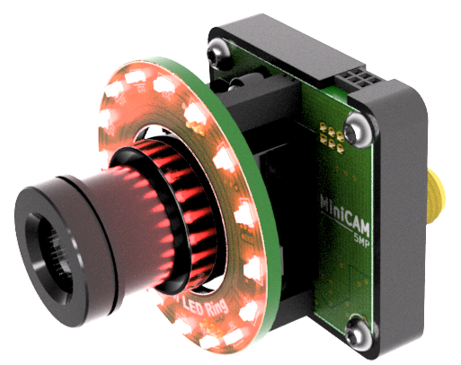
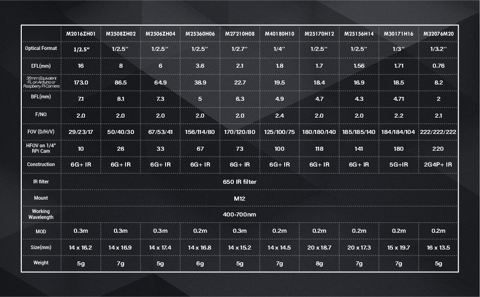

Miniscope Accessories#
Accessories frequently used with miniscopes include:
Open Ephys Coaxial Commutator#

The Open Ephys Coaxial Commutator (documentation, store, github) enables twist-free connection between a stationary data acquisition device and the UCLA Miniscope v4 mounted onto a freely-moving animal. This promotes natural animal behavior by reducing mechanical stress during neurophysiology experiments. This also improves signal reliability by maintaining electrical continuity between stationary and moving electronics. It accomplishes this by utilizing the IMU on-board the UCLA Miniscope v4 PCB to sense the orientation of the miniscope and rotate the tether accordingly. For a guide on how to use the UCLA Miniscope v4 with the commutator, please refer to these guides: Automating Commutation with ONIX and UCLA Miniscope v4 or Automating Commutation with Miniscope-DAQ and UCLA Miniscope v4.
MiniCAM#
The MiniCAM (store, github) is a camera that enables data collection about the behavior of a freely-moving animal during an experiment. It requires its own MiniDAQ or Miniscope-DAQ, and it can be used with Miniscope-DAQ-QT-GUI. The MiniCAM ecosystem comprises of the IR MiniCAM LED Ring and the MiniCAM Lenses Kit. The IR MiniCAM LED Ring facilitates adjustment of the intensity of the illumination of the behavaioral setup. IR illumination does not contaminate the sensor that would be like light of lower wavelengths i.e. visible light. The MiniCAM Lenses Kit enables lens swapability to adjust the field-of-view according to the behavioral experiments. The lenses included in the MiniCAM Lenses Kit are:
